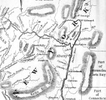
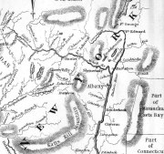

|
Real Estate


 


This page begins to consider the subjects of real estate and real property transactions in early Albany. Real estate (land) holdings were the most common outlets for wealth for most members of the early Albany community. Ownership of a piece of land within the city limits qualified a person for a place on the community mainline. Although the Colonial Albany Project is mostly concerned with real property issues within the boundaries of the city of Albany, we also track the external (out of Albany) real estate history of early Albany residents - but in a less definitive way! Houselots within Beverwyck were defined during the 1650s. After 1664, some real estate transactions are chronicled in the Early Records of Albany. After 1691, other deed and mortgage transactions were filed with the Albany County Clerk. However, much of the real property turnover occurred within families as city houses and lots were passed through generations. Only some of those transmissions are described in the wills of family members or were referenced in a variety of documents generated many years afterwards. The basic real property unit for early Albany people would be their houselot (where they lived) located within the Albany city limits. Other pieces of real estate (stores, smithy's etc., storehouses and sheds, lots, and smaller-often irregular pieces of property) were held by many city residents as well. A few residents owned many such parcels. Special real property features (docks, ferry, easement strips, stream beds) were leased (even though the official term used was "sold") to favored residents for specified time spans and are described within individual biographies. Some Albany people were able to acquire acreage beyond the Albany city limits. The Schuylers, Bleeckers, and Ten Broecks were among the elite Albanians who owned substantial lands beyond Albany. Most affluent, long-time residents held some additional real estate - some of it rented from the Van Rensselaers From the time of the English takeover in 1664 and until the end of British rule in New York, a number of British-connected newcomers (some of whom became Albany residents) were able to secure "royal patents" for lands beyond the Albany city limits and those of Rensselaerswyck as well. The land grant history of the province of New York has been studied in detail but not comprehensively. Those grants have been charted as they relate to the lives of actual early Albany residents. One of our research objectives is a complete title history of every piece of property within the original boundaries of the city. We have made some progress in this area but still are near the beginning of that initiative. Early Albany people also held (by deed and lease) real property in surrounding Rensselaerswyck, at Schaghticoke, Fort Hunter, at Saratoga, at Sacandaga, in greater Albany County, and beyond. We know that such out-of-Albany holdings are numerous and also that we have only touched on those properties. After in-city holdings, we consider them very important! After the Revolution, a number of Albany people were in position to buy up titles to lands in northern and central New York initially granted to soldiers and also lands confiscated from loyalists. We intend to chart and integrate those acquisitions as well. For nineteenth century real property perspectives on eighteenth century Albany, the following sources represent likely starting points and have been consulted frequently by project researchers: The city directories (annual beginning in 1813);
The principal printed resources for Albany real estate transactions are considered in the project Guide.
Patents where Albany people held lots: Kinderhook, Westenhook, Kayaderosses; Canastigione; and Halfmoon.
Lands beyond the Albany orbit (above): These tracts in the unsettled and fringe parts of the colony and are approachable from the Calendar of Land Papers. We recognize that we cannot hope to do more than open the information door to the beyond-Albany real estate holdings of early Albany people.
posted 3/20/04; last revised 1/1/17 |